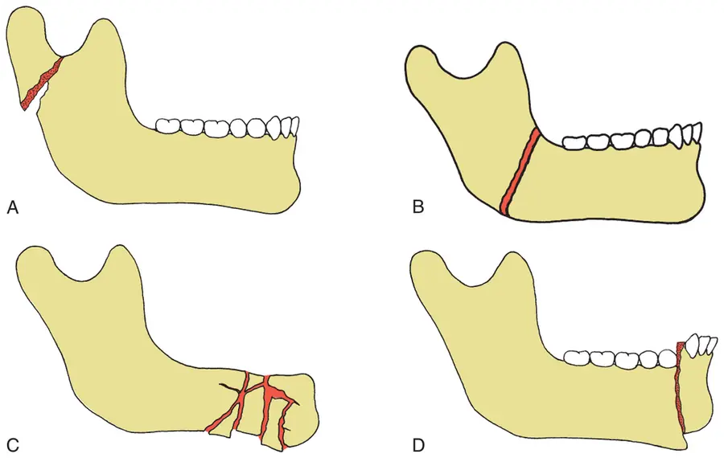
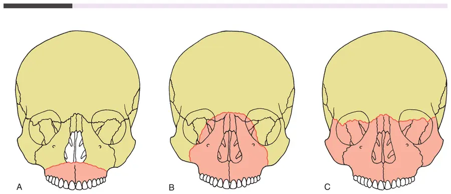

نسخه استخراجشده؛ ترجمه یا تأیید علمی انجام نشده است. وضعیت: captured
علل عمدهی شکستگی صورت: تصادف وسیلهی نقلیه و نزاع فیزیکی. سایر علل: افتادن، حوادث ورزشی، و حوادث کاری.

و یک یافتهی پیشگیرانه: شکستگیهای صورت ناشی از تصادف وسیلهی نقلیه، در افرادی که در زمان حادثه کمربند نبسته بودند بهمراتب شایعترند.
طبقهبندی اول — بر پایهی محل آناتومیک: شکستگیها بهصورت کندیلار، راموس، زاویه، بادی، سمفیز، آلوئولار، و بهندرت زائدهی کورونوئید نامگذاری میشوند.
طبقهبندی دوم — بر پایهی وضعیت قطعات استخوانی:
و در شکستگیهای فک و صورت، این ارتباط میتواند از چهار راه باشد: پارگی مخاط، نفوذ از راه شیار لثهای و لیگامان پریودنتال، ارتباط با پوشش سینوس، و پارگی پوست روی آن.
و یک قاعدهی تعریفی که باید حفظ کنی: بنا به تعریف، هر شکستگی فک درون یک بخش دنداندار، یک شکستگی باز یا مرکب است.
و طبقهبندی سوم — مساعد یا نامساعد: شکستگیهای مندیبل میتوانند مساعد یا نامساعد باشند، بسته به زاویهی شکستگی و نیروی کشش عضله در دو سوی خط شکستگی.
شکستگیهای میدفیس، ماگزیلا و زیگوما و کمپلکس NOE را دربر میگیرند، و میتوانند به اینها طبقهبندی شوند: لوفور I، II، یا III، شکستگی کمپلکس زیگوماتیکوماگزیلاری، شکستگی قوس زیگوماتیک، یا شکستگی NOE.

و سه سطح لوفور — که با جهت و ارتفاع نیرو از هم جدا میشوند:
و یک واقعیت بالینی مهم: بدون استثنا، شکستگیهای میدفیس ترکیبی یا هیبریدی از آسیبهای پیشگفتهاند. یعنی در واقعیت، لوفور خالص کمتر دیده میشود.
و شایعترین شکستگی میدفیس که در اتاق عمل درمان میشود: شکستگی کمپلکس زیگوماتیک — که وقتی رخ میدهد که جسمی مانند مشت یا توپ بیسبال به سطح جانبی گونه برخورد کند. ترومای مشابه میتواند شکستگیهای منفرد استخوانهای بینی یا اوربیت هم بسازد.
و حالا ارزیابی رادیوگرافیک — با یک هشدار مهم: معاینهی رادیوگرافیک بیبرنامه یا بیشازحد عموماً موجه نیست.
هدف رادیوگرافی در بیمار ترومای صورت سه چیز است: تأیید تشخیص بالینی مشکوک، به دست آوردن اطلاعاتی که از معاینهی بالینی روشن نیستند، و تعیین دقیقتر گسترهی آسیب. و معاینهی رادیوگرافیک باید شکستگیها را از زوایا و دیدگاههای مختلف مستند کند.
چهار نمای رادیوگرافیک مندیبل (دو یا چند تای آنها لازم میشوند): پانورامیک، تاون با دهان باز، خلفی-قدامی، و نماهای مایل جانبی. گاهی حتی اینها کافی نیستند و نماهای اکلوزال یا پریاپیکال کمک میکنند.
و دربارهی میدفیس: بهعلت دشواری تفسیر رادیوگرافی سادهی میدفیس، تکنیکهای پیشرفتهتری امروزه به کار میروند — و CT رایجترین تکنیک رادیوگرافیک برای ارزیابی ترومای میدفیس است.
و مزیتش: توانایی ارزیابی شکستگیها در چند صفحهی فضایی و مشاهدهی کل جمجمه و میدفیس و مندیبل با بازسازی سهبعدی، اطلاعات بیبدیلی برای تشخیص و درمان ترومای پیچیدهی صورت فراهم میکند. و در دسترس بودن گستردهی CBCT در محیط سرپایی، تحلیل سهبعدی با دوز پرتوی نسبتاً پایین را ممکن کرده و جایگزین تحلیل چند رادیوگرافی ساده شده است.
و یک الزام پیش از هر دستکاری: در موارد ترومای شدید صورت، آسیب ستون فقرات گردنی باید با یک سری کامل ستون فقرات گردنی — نماهای cross-table، ادنتوئید، و مایل — پیش از هرگونه دستکاری گردن رد شود.
نوع سؤال: ساخت کلمه · 9 خانه
حروف منبع: ا · ت · ن · ک · ی · ی · ر · س · گ